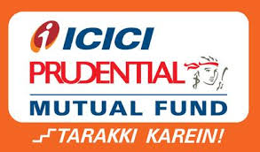

The SBI Mutual Fund Trustee Company Private Limited was set up as a trust under the Trust Act of 1882. This Trust controls the SBI Mutual Fund, one of India’s largest and oldest MFs. The SBI Mutual Fund is a Joint Venture (JV) between one of India’s largest and most profitable banks, the State Bank of India, and Amundi, which is a French asset management company.
The SBI Mutual Fund was set up on June 29, 1987 and was incorporated on February 7, 1992. It was India’s second Mutual Fund after the Unit Trust of India started operations in 1963. In July 2004, SBI decided to divest 37% of the Fund and roped in Amundi as a partner.
Amundi is an asset management major created jointly by Crédit Agricole and Société Générale.
SBI MF has many firsts to its name. It was the first Indian Mutual Fund player to launch a ‘Contra’ fund, called the SBI Contra Fund. In 2013, SBI Mutual Fund India acquired Daiwa Mutual Fund, part of the Daiwa Group of Japan.
SBI Mutual Fund is the first in India to launch an ESG Fund. An acronym for Environment, Social and Governance, the fund provides resources for sustainable investment in major markets.
In 2015, the Employees’ Provident Fund of India invested Rs 5,000 Crore for the first time in a Mutual Fund in India via SBIMF Sensex ETFs or Exchange Traded Funds.
As of March 2024, the SBI Mutual Fund manages assets worth Rs. 9.14 lakh crores. In early 2019, it moved past Aditya Birla and HDFC Mutual Funds to emerge as the 3rd largest Mutual Fund body in India based on Assets under Management or AUM.
The SBI MF is registered with the Securities and Exchange Board of India or SEBI.
2.ICICI Prudential Mutual Fund
ICICI Prudential Asset Management Company Ltd. is a leading asset management company (AMC) in the country focused on bridging the gap between savings & investments and creating long term wealth for investors through a range of simple and relevant investment solutions.
The AMC is a joint venture between ICICI Bank, a well-known and trusted name in financial services in India and Prudential Plc, a leading pan-Asia & Africa focused group providing health, protection and savings solutions. Throughout these years of the joint venture, the company has forged a position of pre-eminence in the Indian Mutual Fund industry.
The AMC manages significant Assets under Management (AUM) in the mutual fund segment. The AMC also caters to Portfolio Management Services for investors, spread across the country, along with International Advisory Mandates for clients across international markets in asset classes like Debt, Equity and Real Estate.
The AMC has witnessed substantial growth in scale; from 2 locations and 6 employees at the inception of the joint venture in 1998, to a current strength of 3072 employees with a reach across over 350 locations reaching out to an investor base of 97 lakh investors (as on January 31st, 2024). The company’s growth momentum has been exponential and it has always focused on increasing accessibility for its investors.
Driven by an entirely investor centric approach, the organization today is a suitable mix of investment expertise, resource bandwidth and process orientation. The AMC endeavors to simplify its investor’s journey to meet their financial goals, and give a good investor experience through innovation, consistency and sustained risk adjusted performance.

3.HDFC Mutual Fund
HDFC Asset Management Company Ltd., or HDFC Mutual Fund, is currently the largest mutual fund and actively managed equity mutual fund in India. It is one of the most profitable asset management companies (AMC) in the country. The company manages assets worth Rs. 6.1L Cr crores as of Mar 31, 2024.
In the last 5 years, the CAGR of:
The company serviced more than 75000 empanelled distribution partners through 210 branches spread across more than 200 cities in India.
HDFC Asset Management Company Ltd. received approval to act as an AMC from SEBI back on 30 June 2000 under the registration number MF/044/00/6. It also offers portfolio management/non-binding investment advisory services since 18 September 2016 under the registration code PM /INP000000506 from SEBI.
4.Aditya Birla Sun Life Mutual Fund
Aditya Birla Sun Life Mutual Funds (ABSLMF) is a joint-venture company co-sponsored by the Indian company, Aditya Birla Capital Limited and Canada-based financial service company, Sun Life AMC Investments, Inc.
Headquartered in Mumbai, it was previously named Birla Sun Life Asset Management Company Limited. It was established in 1994 and has successfully completed 25 years in the Indian financial landscape.
Both the parent companies, Aditya Birla Group and Sun Life Financial, Inc., are significant financial companies with a rich legacy of wealth creation and management. The Aditya Birla Group is the 3rd largest business conglomerate in India, with gross revenue in excess of $41 billion.
Sun Life, on the other hand, is one of the largest life insurance providers in the world, with investment management as their other area of expertise. It ranks 236th on the Fortune 500 list.
ABSLMF is currently one of the largest asset management companies operating in India. With cumulative average assets under management (AUM) of Rs. 3.31 Lakh Crores as of March 31, 2024.
Aditya Birla Sun Life Mutual Fund primarily deals in four classes of funds:
i. Equity funds
ii. Income funds
iii. Debt funds
iv. ELSS funds
The primary commitment of ABSLMF is to increase mutual fund penetration in India. As of May 2019, there are over 83.2 million mutual fund folios in India, aggregating over Rs. 25.43 trillion. It has quadrupled in the past decade alone, and ABSLMF has had a defining role in it.
BSLAMC is one of the leading asset managers in India, servicing around 7.9 million investor folios with a pan India presence across 280 plus locations which include metropolises and small times alike.
ABSLMF takes an active approach to make the entire mutual fund management process straightforward and transparent to ease it for both investors and channel partners. Their portfolio of financial products and services includes sector-specific equity options, treasury and debt products, fund of fund schemes and hybrid income funds, to name a few.
5.Nippon India Mutual Fund
Nippon India Mutual Funds (formerly Reliance Mutual Fund) is one of the leading asset management companies in India. It manages assets across managed accounts, mutual funds, pension funds, alternative investments, and offshore funds. Nippon India Mutual Fund’s (NIMF) asset manager is Nippon Life India Asset Management Limited (NAM India). NAM India’s promoters are Reliance Capital Limited and Nippon Life Insurance Company that hold 75.93% of its total issued and paid-up equity share capital.
Reliance Capital Limited is one of India’s topmost RBI registered Non-Banking Finance Company and has its business interests in asset management, life insurance, general insurance, stockbroking and other activities in the financial sector.
Nippon India Mutual Fund is one of India’s top Asset Management Companies. Set up in June 1995 as Reliance Mutual Fund, it was a joint venture between India's Reliance Capital and Japan's Nippon Life Insurance company. In October 2019, Reliance's stake was bought by Nippon, and the fund house was renamed as Nippon India Mutual Fund.
Nippon Mutual Funds manage assets worth Rs. 431308 crores. Currently, the range of Nippon mutual funds schemes includes 52 equity, 266 debt, and 40 balanced funds. The company is led by its CEO Sundeep Sikka. Nippon Life India Asset Management Limited works as an investment management firm. The Company provides services like portfolio management, mutual fund investment, financial planning, and advisory services to individuals, institutions, trusts, and private funds.
Nippon Life Insurance Company (NLI) is Japan’s one of the leading private life insurance company that offers a wide range of financial/traditional insurance products. The asset management operations in Asia are carried out by NLI, through its subsidiary Nissay Asset Management Corporation (“Nissay”), which manages assets globally.